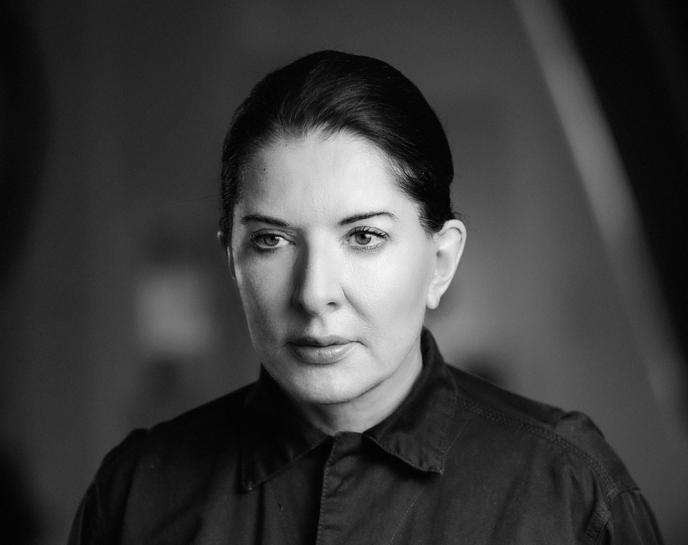

Marina Abramovic
Marina Abramovic is a performance artist that pushes the limits of the human body through her work, often putting herself in dangerous, tedious, and stressful situations to really communicate the message she is trying to send. The minimal design of her work inspires me to keep compositions simple when possible, as less can often speak louder than more, but to also push the boundaries of the conventions in design and see what new results can arise from it.